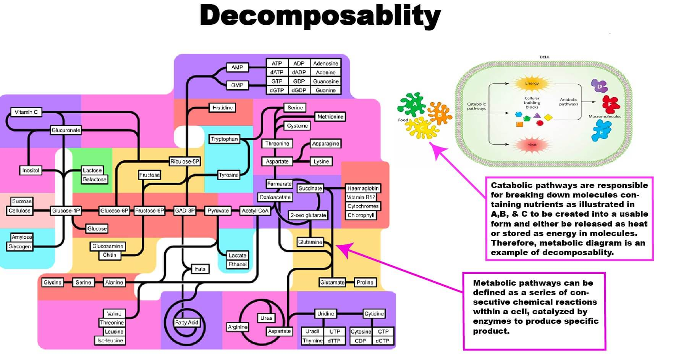
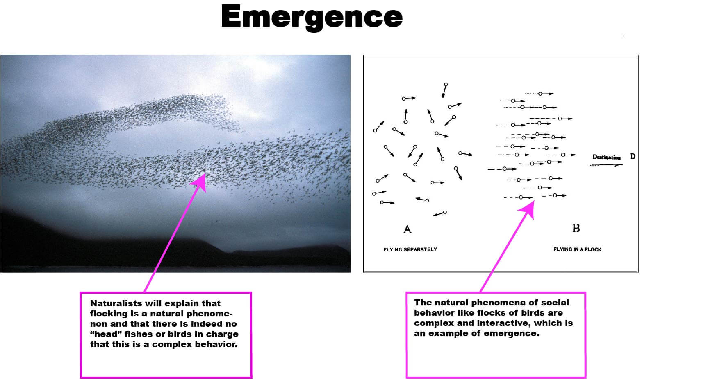

Reading #2
Part 1 -- The Readings and Videos
Q1. -- What is a good working definition of what a System is and perhaps what it is not?
A good working definition of a system is composed of regularly interacting or interdependent groups of activities/parts that form a whole. A system is a collection of elements or components that are organized for a common purpose. An example
of not a working system is one where there is no or lack of detail on how the system works, resulting in a loss of functionality that does not serve a purpose.
Q2. -- For the 4 system definitions you were to look up please give in your own words what they mean and give an example of them for each case.
Modularity is the production system can be decomposed into many components mixed and matched in various configurations, separated and recombined to provide flexibility and variety of use. An example is the phone block.
Decomposability is elements can be further decomposed into components or base elements. Carbon dioxide is decomposable carbonates or oxalates.
Emergence is that many components from a system have different parts of the complex behavior of interaction. An example is a flock of birds.
Chaos theory is the disorder of random and irregular behavior of dynamic systems that have always stayed balance. An example is encryption algorithms.The ability of some dynamic systems to produce sequence of numbers that are
random in nature. This sequence is used to encrypt messages.
Q3 -- Give us your definition of what Tessellation means and give an example you encountered, not mentioned in the reading.
Tessellation means that patterns with regular, semi-regular, or non-geometric shapes are contiguous to assemble larger complex structures.
An example such as the Pyramid of the Louvre is a repeated diamond-shaped pyramid of glass and metal located in Paris.
Q4 -- What is The difference between ideas of Modularity and Tessellation? What are the properties that are in opposition with each other?
Modularity is the production system that can be decomposed into many components mixed and matched in various configurations, irregular and non-substitutable.
But tessellation uses the same geometric figure repeatedly, and the change the of part will affect the overall combination and visual effect.
The properties that are in opposition with each other are irregular and regular, non-substitutable, and substitutable.
Q5 -- What is the difference between designing something that has Complexity (aperiodic) vs being Uniform (periodic)
Complexity(aperiodic) that does not repeat its pattern over a period, it has flexibility; being uniform(periodic) that repeats its pattern over a period. Uniform is example of tessellation, it's all static and predictable, and inflexibility.
Part 2 -- Four Concepts Applied to 4 Different Diagrams

